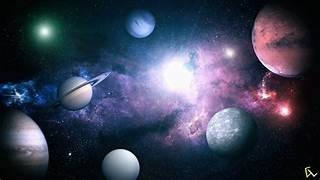

Selamat Datang di Web Tata Surya

Tata Surya adalah kumpulan benda langit yang terdiri dari Matahari sebagai pusatnya dan semua objek yang mengorbitnya karena pengaruh gravitasi. Tata Surya terbentuk sekitar 4,6 miliar tahun yang lalu dari awan gas dan debu kosmik yang runtuh di bawah gravitasinya sendiri. Objek-objek yang mengorbit Matahari mencakup delapan planet utama, yaitu Merkurius, Venus, Bumi, Mars, Jupiter, Saturnus, Uranus, dan Neptunus, beserta satelit alami (bulan), asteroid, komet, meteoroid, dan debu antariksa. Planet-planet dibagi menjadi dua kelompok berdasarkan jaraknya dari Matahari: planet dalam (dekat) yang berbatu—Merkurius hingga Mars, dan planet luar (jauh) yang terdiri dari raksasa gas dan es—Jupiter hingga Neptunus. Matahari, sebagai bintang pusat, menyediakan energi dan gravitasi yang menjaga kestabilan orbit benda-benda langit di sekitarnya. Tata Surya merupakan bagian kecil dari galaksi Bima Sakti dan memainkan peran penting dalam mendukung kehidupan, terutama di Bumi yang merupakan satu-satunya planet yang diketahui memiliki kondisi layak huni hingga saat ini.